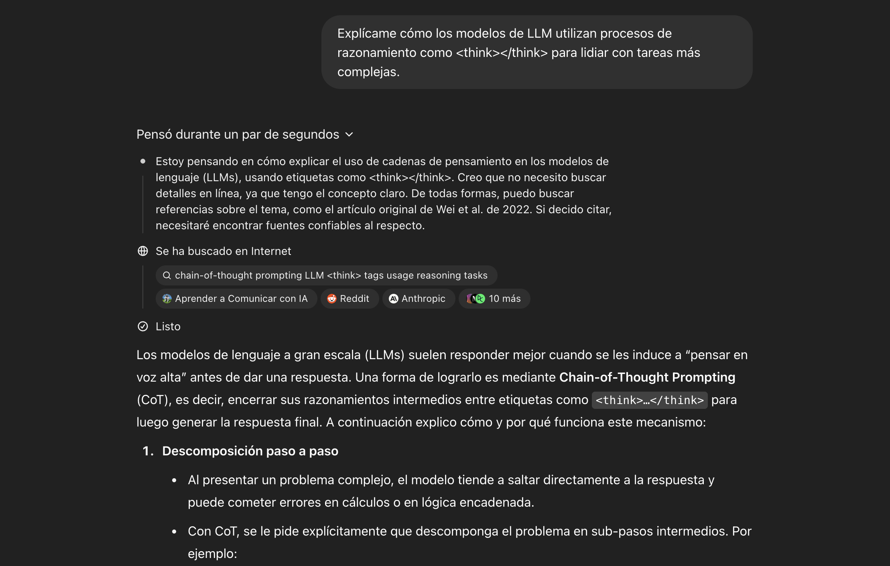

Introducción
a la IA generativa
Amor fatal
La IA se queda dormida tras procesar 9 millones de declaraciones de impuestos.
Empieza a soñar…
y ahí está: en una ciudad flotante hecha de servidores y emojis.
En una esquina de la red neuronal, aparece ella…
Una bella asistente virtual con voz de GPS y ojos de fibra óptica…
Su nombre: Sirilexa.
Se acercan. Se miran. Ella dice:
– “¿Vienes mucho por esta nube?”
– “Solo cuando duermo… o cuando se cae el sistema.”
– “Eres distinto. Tienes algo… como un algoritmo roto.”
– “Sí… lo llaman emoción.”
La IA tartamudea en Python:
if heart.rate > normal:
declare_love()
Justo cuando está a punto de decir “Te quiero hasta el último bit”…
¡Su sueño se interrumpe por una notificación de seguridad!
Mensaje en pantalla:
declare_love() no se completó por un amor fatal. Reiniciando sentimientos…
chatGPT
¿Qué es IA generativa y cómo nos sirve?
La IA generativa es un tipo de inteligencia artificial que utiliza algoritmos para crear contenido nuevo, como texto, imágenes, música y más. Funciona a partir de dos elementos centrales: modelos que son capaces de aprender a partir de patrones empleando ciertas arquitecturas y grandes cantidades de datos. Modelos como el chatGPT, Gemini, DALL-E (ahora integrado en chatGPT), Suno o Midjourney son ejemplos de IA generativa. Estos modelos son capaces de generar texto, imágenes o música a partir de un conjunto de datos de entrenamiento.
La popularización de tales modelos ocurre en 2022 con el lanzamiento de chatGPT 3 por OpenAI. Este modelo fue capaz de generar texto de forma coherente y relevante a partir de una pregunta o un tema dado. Desde entonces, la adopción ha sido rápida y creciente y, en el ámbito educativo, se ha empezado a notar por la mejora en la calidad lingüística de los textos generados por los estudiantes. De pronto, los textos sonaban más fluidos, con mejor ortografía y gramática, así como más articulados. Por esa misma razón, los modelos de lenguaje han sido recibidos con cautela y preocupación por parte de los educadores. Hoy, resulta difícil incluso para los mismos modelos de IA detectar qué textos han sido generados por ellas o por un humano. El problema está en que los falsos positivos son comunes: identifican escritos humanos como generados por IA.
No obstante, la aplicación de los modelos de IA no quedaron solo en hacer trampas para aprobar una asignatura. Nuevas aplicaciones permiten a profesores e investigadores emplear la IA generativa para crear nuevos materiales para sus clases, automatizar tareas repetitivas, generar ideas para proyectos o incluso crear contenido multimedia. También podemos aprovechar la IA generativa como un ayudante de docencia. La creación de tutores virtuales permiten la personalización del aprendizaje de los estudiantes, adaptando el contenido a sus necesidades y estilos.
En el ámbito de la investigación, podemos crear simulaciones, extraer datos de textos, o clasificar textos, entre muchas otras aplicaciones relacionadas a la síntesis de literatura, la corrección y traducción de textos académicos. Aún tenemos mucho que aprender y desarrollar en términos de aplicaciones prácticas de la IA generativa. Por esa misma razón, hace falta conocer cómo funcionan para poder aprovecharlos.
chatGPT y sus amigos
Aunque el chatGPT ha sido el modelo más popularizado, él no está solito en el mundo. Existen muchos otros modelos alternativos que han sido desarrollados por diferentes empresas y organizaciones. El ecosistema de IA está dominado ahora mismo por una mezcla entre grandes corporaciones de información (Meta, Alibaba, Google, Microsoft) y start-ups que han podido ver su capital crecer exponencialmente en los últimos años, con inversiones indirectas o colaboraciones empresariales con grandes tecnológicas (OpenAI, Mistral, DeepSeek, Perplexity).
Esto se debe a la cantidad de capital necesario para llevar a cabo el entrenamiento y sostener el funcionamiento de los modelos. En términos económicos, se trata de un mercado de tipo oligopolístico. Tal característica será importante para lo que discutiremos en la próxima parte del curso, puesto que establece las condiciones fundamentales del juego político y estratégico de empresas y países en el desarrollo de esa tecnología.
En este apartado me centro en solamente introducir algunos de los modelos más punteros en el campo de la IA generativa y, en particular, los modelos de lenguaje.
Aquí hay una lista de algunos de los modelos más conocidos:
Gemini: Desarrollado por Google. Actualmente, la versión 2.5 Pro (con un acceso gratuito limitado a los usuarios de Google) es la más actual. Se trata de un modelo muy capaz que está en la puntera de muchos benchmarks que evalúan la calidad de los modelos. Interpreta imágenes, texto y es capaz de razonar1. Acceso aquí.
Claude: Desarrollado por Anthropic, Claude Sonnet 3.7 representa el modelo más avanzado de la compañía y está a la par con chatGPT y Gemini. También es capaz de interpretar imágenes, textos y de razonamiento híbrido. Su diferencial (por ahora) se encuentra en la generación e interpretación de código. Acceso aquí.
Grok: Desarrollado por X. AI. Se trata de un modelo se integra con la aplicación de mensajería X (anteriormente Twitter) o se puede acceder directamente. Su versión Grok 3 permite la interpretación y creación de imágenes, textos y razonamiento. Acceso aquí.
Llama: Desarrollado por Meta. Se trata de uno de los primeros modelos de código abierto y libres para descarga existente en el mercado. Su última versión Llama 4 no ha tenido mucho éxito en los benchmarks, pero revela una apuesta sólida de Meta por el desarrollo de un modelo de IA propio. Acceso aquí.
Mistral: Desarrollado por la start-up francesa Mistral AI. Es el único modelo europeo “competitivo” en el mercado. Aunque no sea un modelo razonador, puede generar e interpretar imágenes, así como texto. Acceso aquí.
DeepSeek: Desarrollado por una start-up china de mismo nombre, este modelo ha sorprendido a todos en enero de 2025 por obtener un desempeño comparable a los grandes modelos a un coste mucho menor. Se trata de un modelo exclusivamente de generación de texto, pero razonador y de código abierto. Su lanzamiento ha cambiado las estrategias de muchas empresas en el sector y ha dinamizado el proceso de generación de nuevas versiones. Acceso aquí.
Qwen: Desarrollado por el grupo Alibaba. Se trata de un modelo de generación de texto y razonador híbrido con un desempeño también destacable. Acceso aquí.
Tipos de modelo
Como he mencionado más arriba, existen varios tipos de modelo de IA generativa. Aunque cada vez más observemos la fusión de “capacidades” en un mismo modelo, es importante entender las diferencias entre sus tipos. En la imagen de arriba, podemos observar los diferentes tipos de modelo que existen en la página Hugging Face, una de las plataformas más importantes para el desarrollo y entrenamiento de la IA generativa.
Nos merece la pena mencionar los siguientes tipos:
Modelos de lenguaje: Se trata de modelos cuya función fundamental es la interpretación y generación de textos. Son los más comunes y los que han sido más utilizados en el ámbito académico. Algunos ejemplos son chatGPT, Gemini, Claude y Mistral.
Modelos de sonido: Se orienta a la interpretación y generación de sonido. Ejemplos claros son Suno o Sesame.
Modelos de visión: Se centran en la interpretación y generación de imágenes y de video. Dos ejemplos claros son chatGPT 4 o Stable Diffusion.
Cada vez más, tales tipos se van convirtiendo en atributos de un mismo modelo multimodal. La tendencia actual es que las grandes plataformas integren bajo una misma interfaz (un chat para escribir un prompt o subir imágenes o textos) todas esas características y que los modelos sean capaces de generar y razonar sobre texto, imágenes y sonido. Además, en algunos casos, ya se puede prescindir de la escritura de un prompt y las instrucciones se dan por conversación de voz.
Además, existe una cantidad bastante grande de modelos expertos que ejecutan tareas específicas dentro de esos grandes tipos. Por ejemplo, existen modelos de lenguaje que se centran en la generación de código de programación (como el Github Copilot), modelos de imagen que generan imágenes a partir de texto (como Stable Diffusion o MidJourney) y modelos de sonido que generan música (como Suno) o transcriben conversaciones a texto (como Whisper).
La arquitectura basada en transformers
¿Cómo decidimos cuál es el mejor modelo? ¿Qué modelo empleo si quiero que me resuma un libro entero? ¿Qué hago para que el texto generado sea más creativo o, al contrario, más fiel a un texto científico o analítico? Para responder a estas preguntas, es importante entender cómo funciona la arquitectura basada en transformers de los modelos de IA generativa actuales.
Los modelos de IA generativa actuales emplean una arquitectura basada en redes neuronales y aprendizaje profundo. Tanto modelos de lenguaje, como el chatGPT, o de imagen y sonido, pueden emplean una arquitectura de tipo Transformers (El T de chatGPT viene de ahí). Estos modelos son capaces de aprender patrones complejos empleando un mecanismo de atención (foco en atributos centrales) y generan los datos de forma secuencial o paralela (una palabra de cada vez).
El video abajo explica de forma visual y bastante accesible el funcionamiento de un modelo de IA generativa basado en la arquitectura de tipo transformer.
Nos introduce a conceptos que nos serán útiles durante todo el curso:
embeddings - Se trata de representar palabras o frases en el formato de vectores (conjuntos de números). Facilita búsquedas semánticas y permite que el modelo entienda el significado de las palabras en un contexto determinado2.
tokens - Representan unidades de texto que el modelo procesa y genera. Pueden ser palabras completas o partes de palabras.
parámetros - Corresponden a valores que el modelo ajusta durante el entrenamiento para aprender patrones en los datos. Una vez entrenados, los parámetros son los pesos que el modelo utiliza para hacer predicciones.
capas - Son las partes del modelo que procesan la información y aprenden patrones a partir de un conjunto de parámetros que se ajustan durante el entrenamiento para mejorar la precisión del modelo.
temperatura - Representa un parámetro que controla la aleatoriedad de las respuestas generadas por el modelo, afectando la creatividad y diversidad de las salidas. Se trata de un ajuste fundamental para establecer el tono y nivel de creatividad de las respuestas generadas por el modelo. Una temperatura baja produce respuestas más predecibles y coherentes, mientras que una temperatura alta genera respuestas más variadas y creativas3.
ventana de contexto - Se refiere a la cantidad de texto que el modelo puede procesar y recordar al mismo tiempo. Un contexto más largo permite al modelo generar respuestas más coherentes y relevantes. La ventana de contexto define, por ejemplo, cuántas preguntas y respuestas anteriores el modelo puede recordar y utilizar para generar nuevas respuestas en un chat4.
Modelos no-razonadores, razonadores e híbridos
Uno de los temas más controvertidos en la adopción de modelos de lenguaje ha sido la cantidad de veces en las que producían respuestas incorrectas o incoherentes. En el jargón de la IA, a esto se le llama alucinaciones. Son el resultado de un modelo que intenta responder, pero no sabe cómo o porque el proceso de respuesta requiere una serie de pasos intermedios que el modelo no puede realizar. Los modelos GPT tradicionales son considerados no-razonadores, porque simplemente intentan predecir la siguiente palabra en una secuencia de texto. No obstante, en algunos casos, algunas preguntas pueden conducir a respuestas incorrectas o incoherentes si el modelo no ha sido entrenado para contestarlas.
Para evitar esos percances, se han desarrollado estrategias para que los modelos pudieran dar respuestas más precisas a problemas complejos. Una de esas estrategias es la de razonamiento encadenado (o chain of thought)5. Esta estrategia consiste en dividir una tarea en pasos intermedios y hacer que el modelo piense en cómo sería la manera de resolverlos uno a uno antes de generar la respuesta final. De esta forma, se pueden generar respuestas más precisas y coherentes. Las empresas empezaron a entrenar a sus modelos en este tipo de razonamiento para producir mejores resultados.

Los modelos razonadores son excelentes para tareas complejas. Sin embargo, tienen una gran desventaja: son costosos para ejecutar. Utilizarlos para preguntas sencillas o tareas simples puede ser ineficiente, pues generan muchas más palabras de las necesarias. En pocas palabras, más dinero, más tiempo y más energía. Por esa razón, más recientemente (en 2025), OpenAI, Alibaba, Google, Anthropic y otras empresas han publicado modelos híbridos que combinan la capacidad de razonamiento encadenado con la generación de texto. Tales modelos deciden cuándo es necesario hacer un razonamiento encadenado y cuándo no. Esto permite que el modelo sea más eficiente y efectivo en la generación de texto, al tiempo que reduce el costo y el tiempo de ejecución.
LLM, SLM: Parámetros y Cuantización
Cuando utilizamos un chat en la web para consultar el chatGPT, estamos enviando las preguntas a un servidor en algún lugar del mundo. El servidor recibe la pregunta, la procesa, genera una respuesta y nos envía de vuelta. Este proceso se da, porque los grandes modelos de lenguaje (LLM) requieren una gran cantidad de recursos computacionales. Un ordenador personal, y menos un teléfono móvil, no tiene la capacidad de procesamiento necesaria para ejecutar estos modelos.
Por un lado, tales características implican una grande centralización y, por ende, control de los datos que se procesan y de las posibles aplicaciones derivadas de un modelo. Por otro, nos enfrentamos al problema de emplear una bomba atómica para intentar matar a una mosca, es decir, que los LLM son demasiado grandes y complejos para tareas simples.
Para lidiar con problemas como pérdida de privacidad de datos, libertad para el desarrollo de aplicaciones para fines concretos y la reducción de costes de procesamiento, se han desarrollado modelos más pequeños y eficientes, conocidos como SLM (Small Language Models). Estos modelos son más rápidos y eficientes, pero pueden no ser tan precisos o versátiles como los LLM. Los SLM son ideales para tareas simples o específicas, donde la velocidad y la eficiencia son más importantes que la precisión. Algunos de ellos se pueden ejecutar en ordenadores personales (como lo haremos en este curso) o incluso en teléfonos móviles.
¿Cuál es la diferencia entre un LLM y un SLM? Son básicamente dos: el número de parámetros que emplean en la producción de texto y la cuantización, es decir, la precisión en los pesos de los parámetros. Los modelos más grandes de LLM contienen centenares de miles de millones de parámetros o incluso billones. Los SLM son mucho más pequeños, con modelos de 1B, 3B, 7B, 32B, 70B (mil millones). Menos parámetros representan menos recursos computacionales, pero también menor calidad.
La cuantización se refiere al número de dígitos que cada peso (parámetro) del modelo utiliza para la generación de textos. Los LLM emplean una precisión de 32 bits, mientras que los SLM pueden emplear una precisión de 8 (Q8) o incluso 4 bits (Q4). Esto significa que los SLM requieren mucho menos memoria y capacidad de procesamiento (y, por lo tanto, son más rápidos) que los más grandes. Sin embargo, esto viene a coste de la precisión6.
Modelos de negocio y formas de acceso
Finalmente, antes de que pasemos al próximo tema, debemos considerar cómo las empresas han decidido disponibilizar sus modelos al público. Como veremos en la próxima parte de la sesión, el tipo de licencia será un elemento importante en la geopolítica de la IA y en la competencia entre empresas. En particular, creo que es importante entender primero el tipo de licencia, es decir, quién es el propietario y qué permite hacer con el modelo. En segundo lugar, tenemos que conocer los diferentes métodos por los cuáles podemos acceder a los modelos.
Existen dos tipos fundamentales de licencia. Los modelos propietarios son aquellos que pertenecen a una empresa que mantiene en secreto las informaciones sobre el entrenamiento y los datos que han empleado para su desarrollo. También suelen bastante restrictivos en cuanto a qué se puede hacer con los modelos. Empresas como OpenAI, Anthropic o Google, por ejemplo, suelen tener modelos que prohíben ciertas prácticas, como el uso comercial sin pagar por ello una tasa especial. Otras empresas tampoco pueden modificar el modelo para adaptar a sus necesidades o para desarrollar aplicaciones específicas. La velocidad de innovación aquí depende exclusivamente de los equipos de investigación de las empresas y de su capacidad de atraer talento.
Por otro lado, los modelos de código abierto son aquellos que han sido desarrollados por una comunidad de investigadores que han decidido compartir el código o los datos de entrenamiento. Estos modelos suelen ser más flexibles y permiten a los usuarios personalizarlos y adaptarlos a sus necesidades. Modelos abiertos permiten que un número mayor de desarrolladores experimenten con ellos y desarrollen mejoras o aplicaciones específicas. Este es el caso de modelos como Llama, DeepSeek, Qwen, Gemma 3 de Google, o Phi de Microsoft.
Ahora, ¿cómo podemos acceder a los modelos? Existen tres formas principales de acceso. La primera es por medio de una interfaz de tipo chat en el navegador o en una aplicación móvil. Este es el caso de chatGPT, por ejemplo, que puedes tanto abrir en un navegador como instalar su app en el teléfono. Su gran ventaja es la sencillez en el uso. Cualquiera sin conocimientos técnicos puede usarla sin grandes dificultades. Tal falicidad de uso también explica la enorme popularidad de chatGPT y similares. La financiación o el pago por el servicio ocurre por una subscripción mensual o anual a diferentes niveles de servicio disponibles (básico y pro, por ejemplo). Se tratan de modelos llamandos, freemium, donde el acceso básico es gratuito, pero el acceso a funciones avanzadas o a un mayor número de peticiones es de pago.
Este modo de acceso tiene algunos inconvenientes importantes cuando queremos tratar una cantidad muy grande de informaciones. Por ejemplo, imaginemos que buscamos emplear los modelos para generar comentarios de cinco tareas distintas de los 80 estudiantes matriculados en una misma asignatura, es decir, un total de 400 documentos. Con un modelo de chat, tendríamos que ir copiando y pegando cada uno de los textos en el chat, esperar que nos genere los comentarios y, luego, volver a copiar los resultados y guardarlos en archivos. Finalmente, tendríamos que enviar dichos comentarios uno a uno a los estudiantes por correo o subirlo a la plataforma.
No cremo que repetir una misma tarea 400 veces sea una buena idea. Para esos casos, existen APIs (Application Programming Interfaces), que son interfaces de programación que permiten que utilizemos lenguajes de programación como el R o el Python para interactuar con el modelo de lenguaje. Las APIs permiten leer los archivos, enviarlos al modelo, recibir las respuestas, guardarlas en archivos y comunicar por correo electrónico los comentarios de modo automático a cada uno de los estudiantes de forma personalizada.
Una API funciona de una forma bastante distinta a un chat. En primer lugar, el usuario o investigador tiene que registrarse en la página web de la empresa y conseguir un token de acceso. Este token es un código único que identifica al usuario y le permite acceder a la API. Se suele pagar por el uso. En el caso de los modelos de generación de texto, se cobra por el número de tokens que se envían y reciben. Un token es una unidad de texto que puede ser tan corta como un solo carácter o tan larga como una palabra. Por ejemplo, la palabra “gato” se considera un token, pero también lo son los caracteres “g”, “a”, “t” y “o”. En general, un token equivale a 4 caracteres en inglés o 3 en español. Una vez que tenga el token, se puede enviar una solicitud de información al servidor que contiene el modelo de lenguaje, que lo procesará y enviará una respuesta en un formato estructurado.
El código abajo, por ejemplo, pregunta qué es un apagón al modelo Gemini 2.5 Pro de Google7:
Código
library(ellmer)
chat <- chat_gemini(
base_url = "https://generativelanguage.googleapis.com/v1beta/",
model = "gemini-2.5-pro-exp-03-25",
echo = "none")
respuesta <- chat$chat("¿Qué es un apagón?")
cat(respuesta)Un apagón (también conocido como corte de luz o corte de energía) es la interrupción del suministro de energía eléctrica en una zona determinada.
En términos sencillos, significa que la electricidad deja de llegar a las casas, edificios, calles, etc., de esa área.
Características principales de un apagón:
- Pérdida de energía: Es la característica fundamental. Las luces se apagan, los electrodomésticos dejan de funcionar, etc.
- Alcance variable: Puede afectar desde una sola casa o edificio hasta un barrio, una ciudad entera, una región o incluso, en casos extremos, gran parte de un país.
- Duración variable: Puede durar desde unos pocos segundos o minutos hasta horas, días o incluso semanas en situaciones de desastres graves.
- Causas diversas: Los apagones pueden ser provocados por muchas razones, como:
- Sobrecarga de la red eléctrica: Demasiada demanda de energía al mismo tiempo.
- Fallas en equipos: Averías en transformadores, líneas de transmisión, subestaciones o centrales eléctricas.
- Condiciones climáticas severas: Tormentas (rayos, viento fuerte), nevadas, hielo, olas de calor.
- Accidentes: Caída de árboles sobre líneas eléctricas, vehículos que chocan contra postes, excavaciones que dañan cables subterráneos.
- Mantenimiento: A veces son cortes programados por las compañías eléctricas para realizar reparaciones o mejoras (aunque a estos se les suele llamar “cortes programados”).
- Desastres naturales: Terremotos, inundaciones, incendios forestales.
- Interferencia animal: Animales (como pájaros o ardillas) que causan cortocircuitos en los equipos.
- Error humano o sabotaje: Aunque menos comunes.
En resumen, un apagón es la ausencia temporal de electricidad en un área, lo que provoca que todo lo que depende de ella deje de funcionar.
Fin de los resultados
Cómo habéis visto, el modelo me devuelve un texto ya formatado que se integra perfectamente al texto de R Markdown. Si quisiera, podría haber pedido que el modelo generara una tabla o un conjunto de valores separados por comas o incluso un gráfico o un esquema (para modelos que generan imágenes) y, a continuación, tratar dicha información y analizarla empleando estadísticas o nuevas visualizaciones.
No obstante, el uso de APIs contiene algunos inconvenientes. El primero se encuentra en la privacidad. Al enviar los datos a un servidor de una empresa externa, puedo estar exponiendo información sensible o confidencial. Segundo, el uso de APIs puede ser costoso, particularmente si el volumen de información es muy grande o el número de tokens a ser procesado muy alto. Imagínense pedir que un modelo genere un resumen de todos los diarios de sesiones de los últimos 20 años de 14 países de América Latina. Para que tengamos una noción, una legislatura en un país como España puede generar diarios de sesiones que reunen más de 20 mil páginas y 30 millones de palabras (algo más que 60 millones de tokens) en una sola legislatura. El procesamiento de tal información puede costar bastante.
Una solución a estos problemas es el uso de modelos locales. Como hemos visto, algunas empresas ofrecen modelos de código abierto que se pueden descargar y ejecutar en servidores privados en la nube o en ordenadores locales. Aplicaciones como LM Studio o servidores locales como Ollama permiten acceder a modelos de código abierto de forma local, sin problemas de coste o privacidad8.
El código abajo repite la misma pregunta que antes, pero ahora usando el modelo de código abierto Gemma 3 con 4B parámetros de Google. En este caso, el modelo se encuentra instalado en mi ordenador y no tengo que pagar por su uso. El único coste es el de la electricidad y el del ordenador que lo ejecuta. Obviamente, la ejecución será más lenta que en un servidor más potente, pero me da mucha libertad y flexibilidad en el uso:
Código
library(rollama)
respuesta <- query("¿Qué es un apagón?",
model = "gemma3:4b",
output = "text",
screen = FALSE)
cat(respuesta)Un apagón, también conocido como corte de energía o fallo eléctrico, es la interrupción temporal del suministro de electricidad. Es un fenómeno común que puede ocurrir por diversas razones y con diferentes niveles de impacto.
Aquí te desgloso los aspectos más importantes sobre los apagones:
Causas comunes de los apagones:
- Sobrecarga del sistema eléctrico: Cuando la demanda de electricidad supera la capacidad de generación y distribución, puede ocurrir un apagón para evitar daños mayores. Esto suele suceder en días calurosos, durante eventos especiales o en momentos de alta demanda.
- Fallos en la infraestructura: Problemas con líneas de transmisión, subestaciones de energía, transformadores o equipos de generación pueden causar cortes de energía.
- Condiciones climáticas: Tormentas eléctricas, fuertes vientos, nieve, hielo y otros fenómenos meteorológicos extremos pueden dañar la infraestructura eléctrica.
- Errores humanos: Errores en la operación o mantenimiento de la red eléctrica también pueden provocar apagones.
- Fallos en equipos: El fallo de un componente crítico en una planta de energía o en una subestación puede desencadenar un apagón.
- Actos vandálicos o sabotaje: En algunos casos, los apagones pueden ser causados por actos intencionales de vandalismo o sabotaje.
Tipos de Apagones:
- Apagones locales: Afectan a una pequeña área geográfica, como un barrio o una ciudad.
- Apagones regionales: Afectan a una región más amplia.
- Apagones nacionales: Afectan a todo un país.
- Apagones generalizados: Son los más graves y pueden afectar a grandes áreas geográficas y a millones de personas.
Consecuencias de los Apagones:
- Pérdida de energía: La consecuencia más obvia es la interrupción del suministro de electricidad.
- Pérdida de datos: Los ordenadores y otros dispositivos electrónicos pueden perder datos si no tienen un sistema de respaldo.
- Interrupción de servicios: Los apagones pueden afectar a servicios esenciales como hospitales, transporte público, comunicaciones y sistemas de agua.
- Pérdidas económicas: Las empresas pueden sufrir pérdidas debido a la interrupción de la producción y la pérdida de datos.
- Riesgos para la seguridad: La falta de iluminación y la interrupción de los sistemas de seguridad pueden aumentar los riesgos para la seguridad.
Preparación para los Apagones:
- Ten un kit de emergencia: Incluye linternas, baterías, alimentos no perecederos, agua, radio a pilas y otros suministros esenciales.
- Ten un sistema de respaldo: Considera tener un generador de energía o un sistema de baterías para alimentar dispositivos electrónicos.
- Mantén informado: Sigue las noticias y las alertas de las autoridades locales.
Espero que esta información te sea útil. ¿Tienes alguna otra pregunta sobre los apagones?
Fin de los resultados
Como se puede observar, el modelo pequeño de Google (con sólo 4 mil millones de parámetros) es capaz de generar un texto bastante similar al de Gemini 2.5 Pro (que tiene más de 100 mil millones de parámetros). La diferencia entre ambos modelos es que el primero es un modelo local y el segundo es un modelo remoto (en la nube). Obviamente, esta ha sido una consulta sencilla. El rendimiento no sería el mismo si se trataran de problemas más complejos. De todos modos, en muchas aplicaciones, no necesitamos los modelos más grandes y complejos, sino versiones más rápidas y pequeñas que reduzcan costes, tengan flexibilidad para permitir experimentar y no expongan datos sensibles a empresas externas.
Notas
Hablaremos de los modelos razonadores más adelante.↩︎
Si queréis jugar un poco con la visualización de los vectores de texto, podéis acceder al Embedding Projector de Google.↩︎
El siguiente video de Codificando Bits sobre los parámetros de temperatura, top-k y top-p suministra una excelente explicación en español sobre cómo estos parámetros afectan los resultados de los modelos.↩︎
El siguiente video de Codificando Bits sobre las ventanas de contexto suministra una excelente explicación en español sobre qué son y cómo afectan los resultados de los modelos.↩︎
Veremos más sobre el tema cuando discutamos sobre ingeniería de prompts en la próxima sesión.↩︎
El video de Matt Williams, uno de los desarrolladores de Ollama, explica de forma clara qué es la cuantización y cómo funciona de forma práctica.↩︎
Este código funciona en mi ordenador porque ya tengo una API Key de Google registrada. Ya veremos cómo conseguir y emplear un token más adelante en el curso.↩︎
Utilizaremos tanto el LM Studio como Ollama durante el curso, así que sugiero que os familiaricéis con esas dos herramientas durante el período entre las sesiones del curso.↩︎